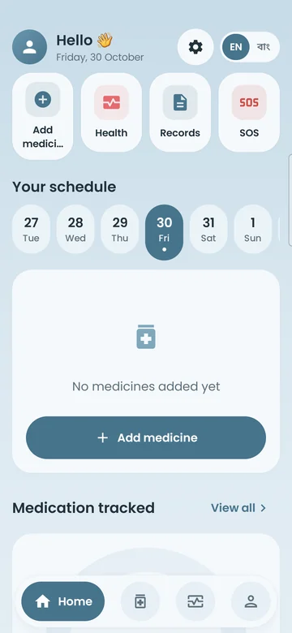

Only you can see itশুধু আপনি দেখতে পারেন
Each account's data is locked to that account by security rules. Other users can never read it.প্রতিটি অ্যাকাউন্টের তথ্য সেই অ্যাকাউন্টেই আটকানো। অন্য কেউ পড়তে পারে না।
Free · Open source · Androidবিনামূল্যে · ওপেন সোর্স · অ্যান্ড্রয়েড
Niramoy speaks up when it's medicine time — "Take your medicine after breakfast" — in English or Bangla, and keeps reminding until the dose is taken. Made for parents and grandparents, simple enough for everyone. ওষুধের সময় হলে নিরাময় মুখে বলে মনে করায় — “সকালের খাবারের পরে ওষুধ খান” — বাংলায় বা ইংরেজিতে, আর খাওয়া না হওয়া পর্যন্ত আবার মনে করায়। মা-বাবার জন্য বানানো, সবার জন্য সহজ।

Why it existsকেন বানানো
My mother takes several medicines a day, and reading small labels and app menus is hard for her. I wanted something that simply tells her when it's time, with one big button to say she took it — and lets the family see that she's okay.
আমার মা দিনে কয়েকটা ওষুধ খান, ছোট লেখা আর অ্যাপের মেনু পড়া তাঁর জন্য কঠিন। তাই এমন কিছু চেয়েছিলাম যা সময় হলে নিজেই বলে দেবে, “খেয়েছি” বলার জন্য একটা বড় বোতাম থাকবে — আর পরিবার জানতে পারবে তিনি ঠিক আছেন।
From real problemsবাস্তব সমস্যা থেকে
Scroll to see what changes for the person taking the medicines — and for the family.স্ক্রল করে দেখুন — যিনি ওষুধ খান আর তাঁর পরিবারের জন্য কী বদলায়।
Mumমা“I forget my medicines, and the labels are too small.”“ওষুধ খেতে ভুলে যাই, লেখাও ছোট।”
At the right time a voice says "Take your medicine after breakfast", full screen even on a locked phone. No answer? It asks again every few minutes, then notes the dose as missed.ঠিক সময়ে কণ্ঠে বলে “সকালের খাবারের পরে ওষুধ খান”, ফোন লক থাকলেও পুরো পর্দায়। উত্তর না দিলে কয়েক মিনিট পরপর আবার বলে, শেষে “খাওয়া হয়নি” লিখে রাখে।
Familyপরিবার“Is she actually taking them?”“মা কি আসলেই ওষুধ খাচ্ছেন?”
Taken, skipped or missed — with the time. Weekly dots per medicine and a simple gauge show how the week went.খেয়েছেন, বাদ দিয়েছেন না খাওয়া হয়নি — সময়সহ। প্রতিটা ওষুধের সাপ্তাহিক ফোঁটা আর একটা সহজ মিটারে পুরো সপ্তাহ দেখা যায়।
Mumমা“I pressed the wrong button.”“ভুল বোতাম চেপে ফেলেছি।”
Tap any dose to switch between taken, skipped, missed or not yet. Past days can be reviewed and fixed from the week strip.যেকোনো ডোজে চাপ দিয়ে খেয়েছি, বাদ, খাওয়া হয়নি বা এখনো না — বদলে নিন। সপ্তাহের তারিখ থেকে আগের দিনও ঠিক করা যায়।
Doctorডাক্তার“How were your sugar and pressure this week?”“এই সপ্তাহে সুগার আর প্রেশার কেমন ছিল?”
"Sugar 120, pressure 130 by 80" — speak and Niramoy fills it in for you to confirm. Mood, pulse, weight and temperature too, with simple charts and normal / high / low labels.“সুগার ১২০, প্রেশার ১৩০ বাই ৮০” — বললেই নিরাময় লিখে দেয়, আপনি দেখে সেভ করেন। শরীর কেমন, পালস, ওজন, জ্বরও — সহজ চার্ট আর ঠিক আছে / বেশি / কম লেবেলসহ।
Familyপরিবার“What if the phone is lost or changed?”“ফোন হারালে বা বদলালে?”
Works without internet and syncs later. Sign in on a new phone and every medicine, record and reminder returns — prescriptions and reports included.নেট ছাড়াও চলে, পরে মিলিয়ে নেয়। নতুন ফোনে ঢুকলেই সব ওষুধ, হিসাব আর এলার্ম ফিরে আসে — প্রেসক্রিপশন ও রিপোর্টের ছবিসহ।
At a glanceএক নজরে
Soft colours, big readable type and one action per card. Screens from a real phone.নরম রং, বড় পড়ার মতো লেখা, প্রতিটা কার্ডে একটাই কাজ। আসল ফোন থেকে নেওয়া ছবি।
15 minutes, onceএকবার, ১৫ মিনিট
Tap Download. If the phone asks, allow “Install unknown apps” for the browser, then Install.ডাউনলোড চাপুন। ফোন জিজ্ঞেস করলে ব্রাউজারকে “Install unknown apps” অনুমতি দিন, তারপর Install।
Email or Google — so nothing is lost if the phone changes.ইমেইল বা গুগল দিয়ে — যাতে ফোন বদলালেও কিছু না হারায়।
Wake-up, breakfast, lunch, dinner and bedtime set the reminder times.ঘুম থেকে ওঠা, নাস্তা, দুপুর ও রাতের খাবার আর ঘুমানোর সময় থেকেই এলার্মের সময় ঠিক হয়।
Press each button on “Set up the phone”, then the 15-second test with the phone locked.“ফোন ঠিক করে নিন” পাতার প্রতিটা বোতাম চাপুন, তারপর ফোন লক করে ১৫ সেকেন্ডের পরীক্ষা।
One by one, many at once, or from a photo of the prescription.একটা একটা করে, অনেকগুলো একসাথে, বা প্রেসক্রিপশনের ছবি তুলে।
One APK for any Android 7.0+ phone. The app tells you when a new version is out.অ্যান্ড্রয়েড ৭.০+ যেকোনো ফোনে চলে। নতুন সংস্করণ এলে অ্যাপ নিজেই জানাবে।
Download Niramoyনিরাময় ডাউনলোড করুনNiramoy is a reminder tool, not medical advice.নিরাময় শুধু মনে করানোর অ্যাপ, ডাক্তারি পরামর্শ নয়।
Privacyতথ্যের নিরাপত্তা
Each account's data is locked to that account by security rules. Other users can never read it.প্রতিটি অ্যাকাউন্টের তথ্য সেই অ্যাকাউন্টেই আটকানো। অন্য কেউ পড়তে পারে না।
Location is read only when you send an emergency WhatsApp with “send location” on.শুধু জরুরি হোয়াটসঅ্যাপ পাঠানোর সময় “জায়গা পাঠাও” চালু থাকলে লোকেশন নেওয়া হয়।
Use it without an account and nothing leaves the device. Want full control? Build your own copy with your own free backend.অ্যাকাউন্ট ছাড়া চালালে কিছুই ফোনের বাইরে যায় না। পুরো নিয়ন্ত্রণ চাইলে নিজের ফ্রি সার্ভারে নিজের কপি বানান।
MIT
Kotlin + Jetpack Compose, Room + Firestore, on-device OCR and voice tones generated with open-source TTS. Ideas, bug reports and Bangla wording fixes are welcome.Kotlin + Jetpack Compose, Room + Firestore, ফোনেই OCR, আর ওপেন সোর্স TTS দিয়ে তৈরি কণ্ঠ। আইডিয়া, ভুল রিপোর্ট আর বাংলা শব্দের সংশোধন — সবই স্বাগত।